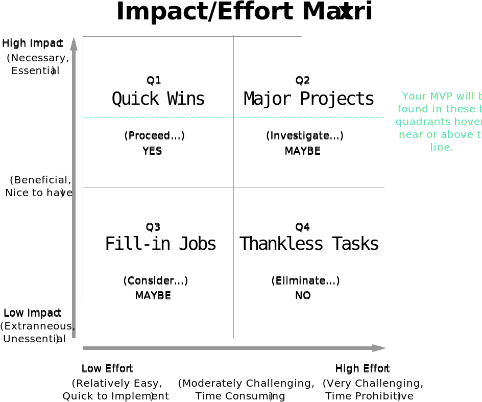

For makers who need an effective tool to help document an discuss the scope of an application, product or project, ScopeHero allows users to compile and rate features in terms of impact and effort.
ScopeHero converts a popular analog/whiteboarding tool called the Impact & Effort Matrix into a web application where a project manager or product owner can create an application, document its features, rate the impact and effort of each feature on a scale of 1 to 10, and receive feedback on which features fall into which quadrants. When visualized, the Impact & Effort Matrix is plotted on an x-y axis and contains four quadrants:
